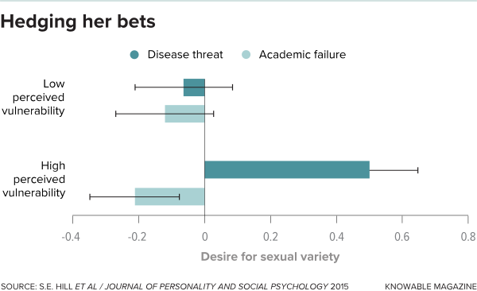

在一定年龄之后，大多数成年人会建立长期合作伙伴关系，这些合作伙伴关系保持相对稳定多年，甚至一生。但是，对于人们来说，拥有更简洁，更少承诺的关系：连接，“有福利的朋友”，婚外情等等，这种情况并不少见。
这给进化心理学家带来了一些问题，他们试图将大部分人类行为解释为数万年来出现的遗传适应。很容易找到男人可能寻求短期性关系的适应性原因。毕竟，一个淫乱的男人可能会生育数十个甚至数百个孩子，从而为下一代贡献更多的基因 - 从进化的角度来说，这是一个胜利。但怀孕和哺乳期的不对称意味着一个女人不能拥有数百名儿童，因此从进化的角度讲，她从播种野燕麦中获益甚微。那么，为什么女性应该参与短期活动呢？
当然，一种可能性是，没有进化的目标，妇女只是享受我们现代的，相对平等的，有避孕的社会的好处。这种解释可能有一些优点。简单地谈论人类行为就像进化心理学家那样 - 好像我们只是另一种本能驾驶的动物 - 可以引起一些社会科学家和普通大众的愤怒，他们反对生物学不是命运，人们控制自己的行为。但进化心理学家想知道是否还有其他力量可以运作，女性的短期配偶选择代表了具有特定进化目标的积极策略。对此进行排序已经成为人类交配行为领域当前最热门的研究课题之一。
逃亡理论
女性短期关系的标准进化解释，至少对那些已经有长期伴侣的人而言，是因为它提供了一个与她身体更具吸引力的人交配的好机会。经常的伙伴，那个可靠，有爱心的人。 “那些性感的男人可能会有更多的伴侣 - 而且，在历史上，他们的孩子比那些好爸爸还要多，”沃斯堡德克萨斯基督教大学的进化心理学家萨拉希尔说。那么，为她的儿子获得这些性感基因的女性应该留下更多的孙子女。
为了验证这一观点，研究人员一直在研究女性在每个月的肥沃时期是否更喜欢有吸引力的男性作为婚外情伴侣，这是他们唯一能够为后代获得这些性感基因的时间。到目前为止，证据是模棱两可的：一些研究表明这种“排卵期转变”是偏好的，而另一些则没有。 “这让我相信那里可能存在某些东西，”希尔说。 “只是它会变得更加微妙。”例如，新墨西哥大学阿尔伯克基分校的进化心理学家Steven Gangestad及其同事在一项尚未发表的研究中发现，预测的排卵转变只发生在对于处于长期关系中的女性而言，不适合未配对的女性。如果这个结果成立，它可能表明，未配对的女性通过短期交配行为寻求性感基因以外的其他东西。
一个相关的可能性是，女性不一定在寻找比长期伴侣提供的更好的基因，而只是寻找不同的基因。这个策略在不确定的时期是有意义的，因为很难预测什么样的基因会给后代提供最好的成功机会。在这种情况下，女人最好的策略可能是对冲她的赌注并为她的孩子寻找各种不同的父亲，希望最终得到正确的东西。 （当然，基因只是导致儿童最终生活成功的众多因素之一。但如果它们很重要，那么在不稳定的时期投注对冲应该会有所回报。）
这个想法也得到了一些支持。例如，希尔和她的同事们向一些女性展示了未来疾病暴发风险的演示，这是一种进化上常见的威胁，遗传多样性有助于对抗;其他女性看到了关于经济衰退的演讲，旨在代表人类祖先不会进化的威胁。果然，听说过疾病的女性在此后不久就表达了对更大范围的约会伴侣的兴趣。 “那些女人想要更多种类，”希尔说。 “这符合你的期望。大西洋鲑鱼完全一样。“（在高病情的环境中，雌性鲑鱼喜欢产卵多个雄性。）

但是德克萨斯大学奥斯汀分校的进化心理学家大卫·巴斯（David Buss）以及交配策略研究的先驱者之一认为，女性必须追求的不仅仅是基因。毕竟，只有在伴侣的基因相关的肥沃时期，女性才会有短暂的关系。此外，1992年的一项研究表明，79％的女性最终爱上了他们的婚外情伴侣。 （对于只有大约三分之一的男性来说也是如此。）“如果您想要的只是好基因，那么这与您预测的正好相反。如果你只是从你的暧昧伙伴那里获取基因，那么在情感上参与是一件灾难性的事情，“巴斯说。
相反，巴斯建议女性可能会利用短期事务来寻找更好的伴侣。作为证据，他指出了1992年的事务研究，该研究还表明，女性比男性更倾向于在对当前的配偶不满时开始事务。此外，女性在选择婚外恋伴侣方面倾向于不降低自己的标准，更倾向于选择聪明，雄心勃勃且可靠的男性 - 他们在长期配偶中寻求相同的品质。 Buss说，目前没有长期关系的女性同样可以使用短期联络人来检验潜在的长期合作伙伴。
单战略球员
事实上，一些批评者质疑女性是否有单独的短期交配策略。相反，他们认为，所有关键配对的努力基本相似，无论这种关系是长期还是短期。加州大学戴维斯分校的心理学家保罗·伊斯特威克说，这意味着大多数短期关系只是从未达到长期依恋的门槛。 Eastwick和他的同事要求数百名志愿者回忆他们最近的短期和长期关系，并从列表中检查每个关系通过的阶段顺序，从最初了解另一个到约会，性别然后结婚志愿者们还评估了他们对这些里程碑事件的浪漫兴趣程度。
研究人员发现，在早期，短期和长期关系都经历了几乎相同的轨迹，具有非常相似的浪漫兴趣水平。当然，短期关系总共通过较少的事件。换句话说，所有关系都是相似的，只有在夫妻相互了解时才开始区分。伊斯特威克说：“人们往往不知道他们是否想要做几次性行为然后说再见，或者这是否是他们可能希望长期存在的人。” （他承认，一些关系，例如与陌生人的一夜情，毫无疑问是短期的。他的志愿者中只有一小部分 - 约3％ - 描述了这种关系，尽管其他研究表明这一数字要高得多， 10％的人。）
伊斯特威克认为，女性在关系早期就会优先考虑伴侣的身体吸引力，因为这是立即引人注目的。然而，随着情侣越来越近，他们的优先事项转向了关怀，幽默和可靠性等特质。
“我认为我们有两种适应性系统可以按顺序工作，而不是两种适应性结果的两种关系，”Eastwick说。由于许多短期关系永远不会超过身体吸引力阶段，这可以使女性（和男性）看起来像是在两种截然不同的策略之间做出选择 - 优先考虑短期关系的性感和长期关系的可靠性 - 即使他们不是。
当然，这些对女性短期交配行为的解释并不是相互排斥的，女性也可能有其他原因进行简短的投掷。 “性被用于许多不同的事物，其中许多与生殖无关，”希尔说。
其他人指出，人类交配策略的思考极限是多年来不变的整体和不变的。西北大学社会心理学家爱丽丝·伊格利（Alice Eagly）指出，特别是人类行为已经发展到高度灵活，使我们的祖先能够迅速适应不断变化的环境条件。 “这是我们作为一个物种取得成功的一部分，我们生活在不同的环境中，因此我们发明了处理它的方法，”她说。 “我们选择了一个交配思维，’我认为我将会拥有什么样的生活？’我们对此有创造力，而我们的选择也在改变。”
例如，这种灵活性在跨文化比较中发挥作用。在更传统的社会中，性别角色的定义更加明确，女性更重视潜在配偶的财务前景，而男性更重视女性的家庭技能。 Eagly说，在更加西化的文化中，女性拥有更多的独立性和平等性，两性的配偶偏好变得更加相似。
甚至进化心理学家也警告不要过多地阅读他们所强调的进化趋势。澳大利亚西悉尼大学的进化心理学家彼得乔纳森说：“当你说男性对休闲性行为比对女性更感兴趣时，他们会想到所有男人和所有女性。” “没有人说全部这个词，但是他们听到了所有这一切。”Jonason像大多数着名的进化心理学家一样，小心翼翼地注意到他研究的是广泛的倾向，而不是严格的规则。人们各不相同 - 而且性别差异仅在许多男性和女性中平均出现。您无法使用这些模式来预测任何特定人员的行为方式。
Buss说，未来的一个重大问题是，我们的进化交配策略是如何在现代世界中发挥作用的，现代世界中避孕药会降低女性怀孕和经济独立的风险，至少可以使女性免于需要伴侣养育子女的资源。互联网约会，可以让我们的手机触及数百万潜在配偶，可能是一个更大的外卡。这个队友的大小是否会让人更挑剔？没有人知道。敬请关注。